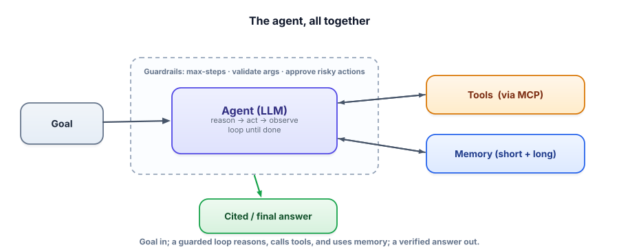

Interview check: Agents & Tool Use
Agent questions test whether you can give a model autonomy responsibly — real tool use, a bounded loop, memory, and guards. Interviewers are listening for engineering maturity, not buzzwords. Here’s the set.
Answer aloud first. The throughline: an agent is LLM + tools + a guarded loop; you reach for the least autonomy that works; and you treat tools and autonomy as a security boundary.

The questions teams ask
“What makes something an agent, and when would you not build one?”
▸ Strong answer
An agent is an LLM in a loop that can call tools and use the results to decide its next step — decide, act, observe, repeat. I’d not build one when the task is fixed and single-step (a calculation, a known pipeline): an agent adds cost, latency, and failure modes for no benefit. Use the least autonomy that solves the task; reach for an agent only when the path depends on what each step reveals.
“How does function/tool calling work end to end?”
▸ Strong answer
You expose tools with schemas (name, description, typed params). The model emits a structured tool call (which tool, what args) — it never runs code itself. Your code executes the function and returns the result as a tool-role message; the model continues. Native tool-calling constrains the output so the call is valid. Tool descriptions are prompt surface — clear ones drive correct selection — and arguments are untrusted input you validate.
“Explain the agent loop and why it needs a step limit.”
▸ Strong answer
The loop repeatedly asks the model what to do: it either calls a tool (whose observation is appended) or emits a final answer (ending the loop). ReAct interleaves reasoning with acting, so each step builds on the last. It needs a max-step cap because the model decides when to stop, and a confused model can loop forever — the cap guarantees termination and bounds cost. I also log the full trace; agent debugging is reading traces.
“When do you add planning, and how do agents remember things?”
▸ Strong answer
Add planning for longer, open-ended goals — decompose into steps you can inspect, approve, and parallelize; prefer plan-and-reflect when results surprise the plan. Memory has two layers: short-term is the context window (summarize old turns to fit), long-term is an external store you write to and retrieve from — which is just RAG over the agent’s own history, with episodic (events) and semantic (facts) memories. Memory’s hard part is curation, not storage.
“What is MCP and why does it matter?”
▸ Strong answer
MCP is an open standard for connecting AI apps to tools and data — “USB-C for AI.” A client (your agent) connects to servers exposing tools, resources, and prompts through one protocol, so you build a connector once and any compatible agent uses it. It’s become industry-standard infrastructure (broad platform support, thousands of public servers, Linux Foundation governance), which shifts agent-building toward connecting trusted servers — and makes server trust a real security question.
“When would you use multiple agents, and what’s the risk?”
▸ Strong answer
Use specialists + an orchestrator when roles are genuinely separable (router for distinct request types, pipeline for an assembly line, parallel for independent sub-tasks). The risk is coordination overhead: handoffs are lossy, errors compound, cost and debugging difficulty rise. So single-agent-first — one well-tooled agent beats five poorly-coordinated ones; add agents only when a single agent measurably struggles.
“How do you make an autonomous agent safe for production?”
▸ Strong answer
Defense in depth: bound the loop (max steps), validate tool arguments, cap cost/time (budgets, timeouts), require human approval for irreversible/high-impact actions, apply least privilege (only the tools the task needs), sandbox dangerous capabilities, and log every step (observability). Critically, hard limits live in code, not the prompt, because prompts can be overridden by injection. And I evaluate the agent on representative tasks on every change, since I can’t eyeball dozens of autonomous actions.
“Design an agent that books meetings from incoming emails.”
▸ Strong answer
Tools: read_email, check_calendar, propose_times, create_event, send_reply. Loop: parse the request → check availability → pick times → (book) → reply. Memory: the user’s preferences (timezone, meeting length, working hours) in long-term memory; the current email thread in short-term. Guards: validate parsed details, human approval before sending replies or creating events (irreversible/visible), a step cap, and least privilege (no access to unrelated mailboxes). Treat email content as untrusted (injection risk). Evaluate on sample threads with known-correct bookings.
“Your agent reads web pages / documents as tool results. How do you defend against prompt injection through them?”
▸ Strong answer
Treat all tool/retrieved content as untrusted data, never instructions: fence it with delimiters and instruct the model to never follow instructions found inside it. Don’t expose dangerous tools to a context that ingests untrusted text, or gate them behind human approval and hard code-level limits. Apply least privilege so a hijacked agent can do little, validate outputs and actions, and log everything. It’s an arms race (full treatment in Track 7), but the core is: untrusted-in means constrained-action-out.
Rapid-fire self-check
The single most important reason to put a hard refund cap in code rather than the system prompt is…
An agent keeps looping on a task, repeating the same failing tool call. Best first debugging move?
- Chatbot vs agent, and choosing the least autonomy that works.
- Tool calling end to end (schema → call → execute → result back).
- The ReAct loop and why it needs a step limit; reading the trace.
- Planning (plan-then-execute vs reflect) and memory (short/long, = RAG).
- MCP: client/server, tools/resources/prompts, why it’s a standard.
- Multi-agent patterns and single-agent-first.
- Failure modes and the full guard stack (code-level limits, HITL, least privilege, observability).
You can now build agents that act — reliably and safely. Next, the other way to change a model’s behavior when prompting and RAG hit their limits: Track 5, Fine-tuning & Adapters.